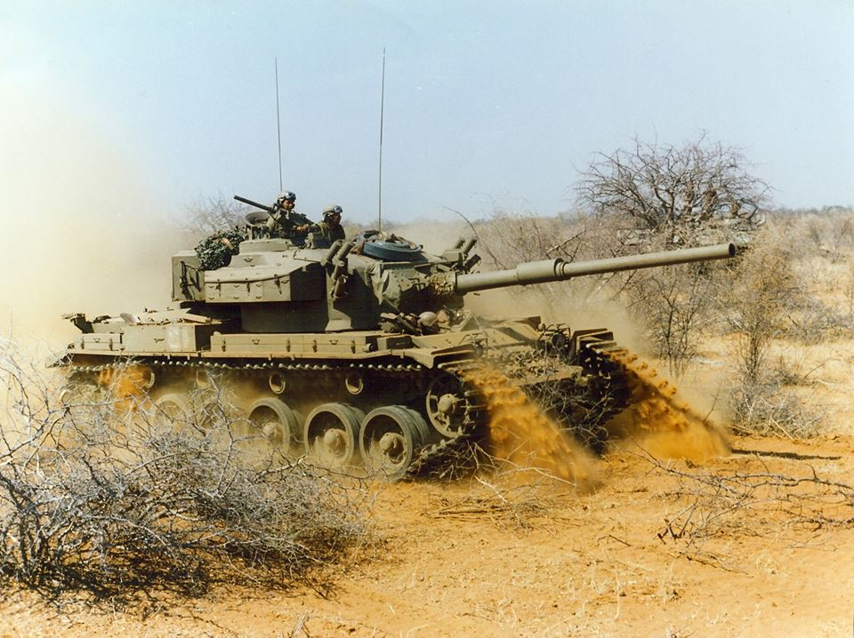

Including the Centurion tank on this website is probably cheating, even though the development of tank started in 1943 and with production starting in January 1945 it never reached mainland Europe until after the European front of World War Two ended.
The Centurion proved to be a very popular tank for decades to come because it had good armour, good maneuverability, and also a good gun. It's known as the first MBT (Main Battle Tank) due to this harmonious combination whereas most tanks during WW2 were specialised into one or two but not all three.
It was in service from 1946 onwards for the British army however only saw combat in 1950 during the Korean War in support of UN forces and it stayed in service till the Chieftain tank came along in the 1960s.
Many other countries purchased and used the Centurion including Austrailia, Canada, Israel, Jordan, Sweden, Switzerland, and South Africa.
Some countries still use Centurions albeit altered even today.
South Africa still employs 200 Centurions but have modernised them and named this modernised version as Olifant (Afrikaans for Elephant) whilst Israel have used the Centurion chassis for their own APCs.
| Model Variant | Turret armour thickness | Frontal armour thickness | Top speed |
|---|---|---|---|
| Centurion MkI | 254mm | 76.2mm | 25.7kmph |
| Centurion Mk7/1 | 254mm | 120.7mm | 20kmph |
| Olifant Mk2 | 152mm | 118mm | 20kmph |
Embedded below is an informative video on the Churchill MkVI and MkVII.
Centurion tank
South African Olifant